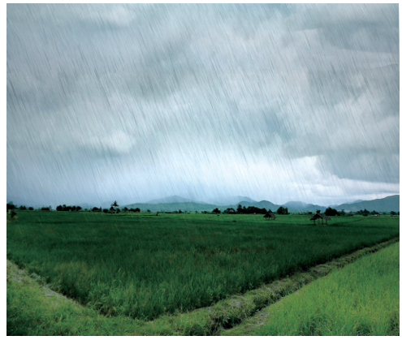
நுழையும் முன்
உயிர்களின் இருப்பை இயற்கைச் சூழலே முடிவு செய்கிறது. இயற்கைக்கும் மனிதர்க்கும் இடையே தொப்புள்கொடி உறவாக அமைவது மழைத்துளி. சூழலியல் மாற்றத்தால் நிகழ்ந்து கொண்டிருக்கும் அவலத்தைக் காட்சிப்படுத்தும் கவிதையை அறிவோம் வாருங்கள்
குருவிகளையும்
கூடுகளையும்
பார்க்கக் கூடவில்லை
முன்பென்றால் ஊரில்
அடைமழைக்காலம்
ஆற்றில் நீர் புரளும்
கரையெல்லாம் நெடுமரங்கள்
கரைகின்ற பறவைக் குரல்கள்
போகும் வழியெல்லாம்
தூக்கணாங்குருவிக் கூடுகள்
காற்றிலாடும் புல் வீடுகள்
மூங்கில் கிளையமர்ந்து
சுழித்தோடும் நீருடன்
பாடிக்கொண்டிருக்கும் சிட்டுகள்
மண்ணின் மார்பு
சுரந்த காலமது
வெட்டுண்டன மரங்கள்
வான் பொய்த்தது
மறுகியது மண்
ஏதிலியாய்க் குருவிகள்
எங்கோ போயின.
அழகிய பெரியவன்
ஏதிலி, அகதி
மறுகியது, வருந்தியது
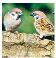
இப்போது குருவிகளையும் குருவிக்கூடுகளையும் பார்க்க இயலவில்லை. ஊரில் ஓடும் ஆற்றில் முன்பெல்லாம் அடைமழைக் காலத்தில் நீர் புரண்டோடும். ஆற்றின் கரைகளில் உயர்ந்த மரங்கள் இருக்கும். பறவைகளின் குரல்கள் கேட்டுக் கொண்டே இருக்கும். செல்லும் வழியில் எல்லாம் தூக்கணாங்குருவிகளின் புல்லினால் ஆகிய வீடுகளாகிய கூடுகள் காற்றில் ஆடும்.
மூங்கில்களில் அமர்ந்திருக்கும் சிட்டுக்குருவிகள் ஓடும் நீரின் ஓசையோடு இணைந்து பாடும். மண்ணில் நீர் சுரந்து கொண்டிருந்த காலம் அது. இப்போது மரங்கள் வெட்டப்பட்டு விட்டன. வானம் பொய்த்து விட்டது. நிலமும் வருந்தியது. பறவைகள் எல்லாம் அகதிகளாக எங்கோ சென்று விட்டன.
அழகிய பெரியவனின் இயற்பெயர் அரவிந்தன். புதினம், சிறுகதை, கவிதை,
கட்டுரை போன்ற படைப்புத் தளங்களில் இயங்குபவர். ‘தகப்பன் கொடி’
புதினத்திற்காக 2003ஆம் ஆண்டில் தமிழ்நாடு அரசின் விருது பெற்றவர். குறடு, நெரிக்கட்டு, அரூப நஞ்சு, பெருகும் வேட்கை உள்ளிட்ட நூல்களை எழுதியுள்ளார்.
1, மழைக்காலக் காட்சியை ஓவியம் தீட்டி மகிழ்க.
2, உங்கள் சுற்றுப்புறத்தில் காணப்படும் பறவைகளின் பெயர்களைத் தொகுத்து எழுதுக.
செயல்பாடு முடிவு
சரியான விடையைத் தேர்ந்தெடுத்து எழுதுக.
1, கூடு கட்டுவதற்கு மரம் கிடைக்காத பறவைகள் டேஷ் வேறிடம் சென்றன.
அ, பதிலிகளாக
ஆ, ஏதிலிகளாக
இ, விருந்தாளிகளாக
ஈ, பயணிகளாக
2, முன்பென்றால் என்னும் சொல்லைப் பிரித்து எழுதக் கிடைப்பது டேஷ்
அ, முன் கூட்டல் பென்றால்
ஆ, முன்பு கூட்டல் அன்றால்
இ, முன்பு கூட்டல் என்றால்
ஈ, முன்பு கூட்டல் பென்றால்
3, சுழித்தோடும் என்னும் சொல்லைப் பிரித்து எழுதக் கிடைப்பது டேஷ்
அ, சுழித்து கூட்டல் ஓடும்
ஆ, சுழி கூட்டல் தோடும்
இ, சுழி கூட்டல் ஓடும்
ஈ, சுழித் கூட்டல் தோடும்
4, வழி கூட்டல் எல்லாம் என்பதனைச் சேர்த்தெழுதக் கிடைக்கும் சொல் டேஷ்
அ, வழிஎல்லாம்
ஆ, வழியிலெல்லாம்
இ, வழில்லாம்
ஈ, வழியெல்லாம்
1, முன்பெல்லாம் மழைக்காலம் எவ்வாறு இருக்கும்
2, தூக்கணாங்குருவியின் கூடுகளைக் கவிஞர் ஏன் புல் வீடுகள் என்று குறிப்பிடுகிறார்
குருவிகள் ஏதிலிகளாக ஆனதற்குக் காரணம் என்ன
பறவைகள் ஏதிலிகளாகப் போகாமல் இருப்பதற்கு நாம் என்ன செய்யவேண்டுமென நீங்கள் கருதுகிறீர்கள்
நுழையும் முன்
மனிதர்கள் பொருள் தேடுவதற்காக வேறு ஊர்களுக்குச் செல்கிறார்கள். சிலர் திரும்புகிறார்கள். சிலர் அங்கேயே தங்குகிறார்கள். மனிதர்களைப் போலவே பறவைகளும் வேறு இடங்களுக்கும் நாடுகளுக்கும் செல்கின்றன. பறவைகள் போகாத நாடுகள் இல்லை, மலைகள் இல்லை, நீர்நிலைகள் இல்லை, பறவைகளோடு கொஞ்சம் நாமும் பறப்போமா
மனிதர்கள் வெளியூர்களுக்குச் சென்று மீண்டும் தம் சொந்த ஊருக்குத் திரும்புவதை அறிவோம். அதைப் போலவே பறவைகளும் வெளிநாடுகளுக்குச் சென்று திரும்புகின்றன என்பது உங்களுக்குத் தெரியுமா
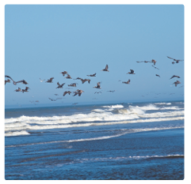
பறவைகள் கண்டம் விட்டுக் கண்டம் பறக்கின்றன. அவை பெருங்கடல்களையும் மலைகளையும் கடந்து போகின்றன. குறிப்பிட்ட காலத்திற்குப் பிறகு புறப்பட்ட இடத்திற்கே வந்து சேர்கின்றன. இவ்வாறு பறவைகள் இடம் பெயர்தலை வலசை போதல் (Bird Migration) என்பர். நீர்வாழ் பறவைகளே பெரும்பாலும் வலசை போகின்றன.
உணவு, இருப்பிடம், தட்பவெப்பநிலை மாற்றம், இனப்பெருக்கம் இவற்றிற்காகவே பறவைகள் இடம் பெயர்கின்றன. நிலவு, விண்மீன், புவிஈர்ப்புப் புலம் ஆகியவற்றை அடிப்படையாகக் கொண்டே பறவைகள் இடம் பெயர்கின்றன. பொதுவாக வடக்கிலிருந்து தெற்கு நோக்கியும், மேற்கிலிருந்து கிழக்கு நோக்கியும் பறவைகள் வலசை போகின்றன.
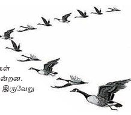
பறவைகள் தங்களுக்கென ஒரு வழித்தடத்தைத் தேர்ந்தெடுத்து , அந்தப்பாதையிலேயே பறக்கின்றன. சில பறவை இனங்கள் அதே பாதையில் தாய்நிலங்களுக்குத் திரும்புகின்றன. சில பறவை இனங்கள் போவதற்கும் வருவதற்கும் இருவேறு பாதைகளைப் பயன்படுத்துகின்றன.
பயணம் செய்யும்போது சிலவகைப் பறவைகள் இரை, ஓய்வு போன்ற
தேவைகளுக்காகத் தரை இறங்கும். இடையில் எங்கும் நிற்காமல் பறந்து,
வாழிடம் சேரும் பறவைகளும் உண்டு.
• தலையில் சிறகு வளர்தல்
• இறகுகளின் நிறம் மாறுதல்
• உடலில் கற்றையாக முடி வளர்தல்
ஒருவகைப் பறவை வேறு வகைப் பறவையாக உருமாறித் தோன்றும் அளவிற்குக் கூடச் சில நேரங்களில் மாற்றங்கள் ஏற்படும்.
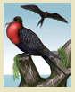
கப்பல் பறவை
சிறகடிக்காமல் கடலையும் தாண்டிப் பறக்கும் பறவை கப்பல் பறவை
( Frigate bird) . இது தரையிறங்காமல் 400 கிலோ மீட்டர் வரை பறக்கும். இது கப்பல் கூழைக்கடா, கடற்கொள்ளைப் பறவை
என்றும் அழைக்கப்படுகிறது
பெட்டிச் செய்தி முடிவு
தமிழ்நாட்டிற்கு வெளிநாட்டுப் பறவைகள் வலசை வருவது பற்றி இலக்கியங்களிலும் செய்திகள் உள்ளன. ஏறத்தாழ 1500 ஆண்டுகளுக்கு முன்பு வாழ்ந்த சத்திமுத்தப்புலவர் நாராய், நாராய், செங்கால் நாராய் என்னும் பாடலை எழுதியுள்ளார். அப்பாடலில் உள்ள தென்திசைக் குமரிஆடி வடதிசைக்கு ஏகுவீர் ஆயின் என்னும் அடிகள் பறவைகள் வலசை வந்த செய்தியைக் குறிப்பிடுகின்றன.
ஐரோப்பாவில் இருந்து தமிழ்நாட்டிற்குச் செங்கால் நாரைகள் வருவது தற்போதைய ஆய்விலும் உறுதிப்படுத்தப்பட்டு உள்ளது. வெளிநாட்டுப் பறவைகளுக்கும் புகலிடமாகத் திகழ்கிறது தமிழ்நாடு.
தற்போது வெகுவாக அழிந்து வரும் பறவையினம் எது என்று உங்களுக்குத் தெரியுமா
சிட்டுக் குருவிதான் அது.
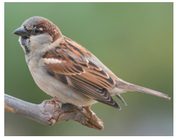
உருவத்தில் சிறிய இந்தப் பழுப்புநிறப் பறவையைப் பார்த்தவுடனே ஆண், பெண் வேறுபாட்டை உணர முடியும். ஆண்குருவியின் தொண்டைப்பகுதி கறுப்பு நிறத்தில் இருக்கும். உடல் பகுதி அடர்பழுப்பு நிறத்தில் இருக்கும். பெண் குருவியின் உடல் முழுவதும் மங்கிய பழுப்பு நிறத்தில் இருக்கும்.
சிட்டுக்குருவி கூடுகட்டி வாழும் பறவையினத்தைச் சார்ந்தது. கூடுகட்டும் காலங்களில் சத்தமிட்டுக் கொண்டே இருக்கும். கூடுகட்டிய பின் மூன்று முதல் ஆறு முட்டைகள் வரை இடும். பதினான்கு நாள்கள் அடைகாக்கும். பதினைந்தாம் நாளில் குஞ்சுகள் வெளிவரும்.
துருவப் பகுதிகள் தவிர மனிதன் வாழும் இடங்களில் எல்லாம் சிட்டுக்குருவிகளும் வாழ்கின்றன. இந்தியா முழுவதும் சிட்டுக்குருவிகளைக் காணலாம். இமயமலைத் தொடரில் 4000 மீட்டர் உயரத்தில் கூட இவை வாழ்கின்றன.
தானியங்கள், புழுபூச்சிகள், மலர் அரும்புகள், இளந்தளிர்கள், தேன் போன்றவை சிட்டுக் குருவிகளின் உணவாகும். சிட்டுக்குருவியின் குஞ்சுகள் பெரும்பாலும் புழு, பூச்சிகளையே உட்கொள்ளும். அதனால், தாய்க்குருவி புழு பூச்சிகளைப் பிடித்துத் தம் குஞ்சுகளுக்கு ஊட்டிவிடும். சிட்டுக்குருவியின் வாழ்நாள் பத்து முதல் பதின்மூன்று ஆண்டுகள் ஆகும். சிட்டுக்குருவி உருவத்தில் சிறியது. ஆனாலும் வேகமாகப் பறக்கும். அதனால்தான் விரைவாகச் செல்பவனைச் சிட்டாய்ப் பறந்து விட்டான் என்று கூறுகிறோம்.
• மனிதர்கள் விவசாயத்திற்குப் பூச்சிக்கொல்லிகளைப் பயன்படுத்துவதால் குருவிக் குஞ்சுகளுக்கு உணவான புழு, பூச்சிகள் கிடைப்பதில்லை.
• நவீன கட்டடங்கள் குருவிகள் கூடு கட்டி வாழ்வதற்கு ஏற்றவையாக இல்லை.
• தற்காலத்தில் தாவர வேலிகளுக்கு மாற்றாகச் செயற்கை வேலிகள் அமைக்கப்படுகின்றன. எனவே, சிட்டுக்குருவிகள் வாழ உகந்த வேலித் தாவரங்கள் குறைந்துவிட்டன.
• சிட்டுக்குருவிகள் ஓய்வெடுக்கும் புதர்ச்செடிகளும் இல்லை.
• உணவுக்கும்,இருப்பிடத்திற்கும் சிட்டுக்குருவிகளுடன் மற்ற பறவைகள் போட்டியிடுகின்றன.
• ஆல், அரசு போன்ற மரங்களையும் அவரை, புடலை போன்ற கொடிகளையும் வளர்க்க வேண்டும்.
• நமது மண்ணுக்கேற்ற பிறவகை உள்ளூர்த் தாவரங்களையும்
வளர்க்க வேண்டும்.
• தோட்டங்களிலும் வயல்வெளிகளிலும் செயற்கை உரங்கள், பூச்சிக்கொல்லி மருந்துகள் ஆகியவற்றைத் தெளிப்பதைத் தவிர்க்க வேண்டும்.
காக்கைகுருவி எங்கள் சாதி என்று பாரதியார் பாடினார். சமைப்பதற்குத்
தம் மனைவி வைத்திருந்த சிறிதளவு அரிசியையும் முற்றத்தில் இருந்த சிட்டுக் குருவிகளுக்கு மகிழ்வுடன் போட்டுவிட்டுப் பட்டினியாக இருந்தாராம் இவர்.
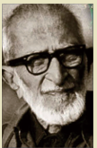
இந்தியாவின் பறவை மனிதர்
இன்றைய பறவையியல் ஆய்வாளர்களுக்கு முன்னோடி டாக்டர் சலீம் அலி. தம் வாழ்நாள் முழுவதும் பறவைகளைப் பற்றி ஆராய்ச்சி செய்வதிலும் அவற்றைப் படம் பிடிப்பதிலும் ஈடுபட்டார், அதனால், அவர் இந்தியாவின் பறவை மனிதர் என்று அழைக்கப்படுகிறார். பறவைகள் குறித்துப் பல நூல்களை எழுதியுள்ளார் . தம் வரலாற்று நூலுக்குச் சிட்டுக்குருவியின் வீழ்ச்சி The Fall of a Sparrow என்று பெயரிட்டுள்ளார்.
மனிதன் இல்லாத உலகில் பறவைகள் வாழ முடியும்
பறவைகள் இல்லாத உலகில் மனிதன் வாழ முடியாது
என்கிறார் பறவையியல் ஆய்வாளர் சலீம் அலி. இவ்வுண்மையை நாமும் உணர்ந்து இயற்கையைப் போற்றிப் பறவைகளைக் காப்போம்.
பறவைகள் பற்றிய படிப்பு Ornithology எனப்படும்.
உலகச் சிட்டுக்குருவிகள் நாள் மார்ச் 20
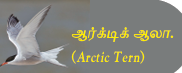
ஆர்டிக் ஆலா
உலகிலேயே நெடுந்தொலைவு 22,000 கிலோ மீட்டர் பயணம் செய்யும் பறவையினம். Arctic Tern
1, உங்கள் வீட்டுக்கு அருகில் பறவைகள் வருவதற்கு என்னென்ன வழி வகைகள் செய்யலாம் என்பது பற்றி வகுப்பறையில் கலந்துரையாடுக.
2, பறவைகள் தொடர்பான பழமொழிகளைத் தொகுத்து எழுதுக.
3, இயற்கையைப் பாதுகாக்கும் வகையில் முழக்கத் தொடர்களை எழுதுக.
எடுத்துக்காட்டு காப்போம் காப்போம்! பறவைகளைக் காப்போம்
1, தட்பவெப்பம் என்னும் சொல்லைப் பிரித்து எழுதக் கிடைப்பது டேஷ்
அ, தட்பம் கூட்டல் வெப்பம்
ஆ, தட்ப கூட்டல் வெப்பம்
இ, தட் கூட்டல் வெப்பம்
ஈ, தட்பு கூட்டல் வெப்பம்
2, வேதியுரங்கள் என்னும் சொல்லைப் பிரித்து எழுதக் கிடைப்பது டேஷ்
அ, வேதி கூட்டல் யுரங்கள்
ஆ, வேதி கூட்டல் உரங்கள்
இ, வேத் கூட்டல் உரங்கள்
ஈ, வேதியு கூட்டல் ரங்கள்
3, தரை கூட்டல் இறங்கும் என்பதனைச் சேர்த்தெழுதக் கிடைக்கும் சொல் டேஷ்
அ, தரையிறங்கும்
ஆ, தரைஇறங்கும்
இ, தரையுறங்கும்
ஈ, தரைய்றங்கும்
4, வழி கூட்டல் தடம் என்பதனைச் சேர்த்தெழுதக் கிடைக்கும் சொல் டேஷ்
அ, வழிதடம்
ஆ, வழித்தடம்
இ, வழிதிடம்
ஈ, வழித்திடம்
5, சிட்டுக்குருவி வாழ முடியாத பகுதி டேஷ்
அ, துருவப்பகுதி
ஆ, இமயமலை
இ, இந்தியா
ஈ, தமிழ்நாடு
1, மிக நீண்டதொலைவு பறக்கும் பறவை டேஷ்
2, பறவைகள் வலசை போவதைப் பற்றிப் பாடிய தமிழ்ப்புலவர் டேஷ்
3, பறவைகள் இடம்பெயர்வதற்கு டேஷ் என்று பெயர்.
4, இந்தியாவின் பறவை மனிதர் டேஷ்
5, பறவைகள் வலசை போகக் காரணங்களுள் ஒன்று டேஷ்
1, வெளிநாடு டேஷ்
2, வாழ்நாள் டேஷ்
3, செயற்கை டேஷ்
1, மரங்களை வளர்த்து டேஷ் யைக் காப்போம்
டேஷ் உரங்களைத் தவிர்த்து நிலவளம் காப்போம்
செயற்கை, இயற்கை
2, தமிழகத்தில் வலசைப் பறவைகளின் வருகை டேஷ் தற்போது சிட்டுக் குருவிகளின் எண்ணிக்கை டேஷ்
குறைந்துள்ளது, மிகுந்துள்ளது
1, பறவைகள் எக்காரணங்களுக்காக இடம் பெயர்கின்றன
2, வலசையின்போது பறவையின் உடலில் ஏற்படும் மாற்றங்கள் யாவை
1, சிட்டுக் குருவியின் வாழ்க்கை பற்றிச் சிறு குறிப்பு எழுதுக.
2, வலசைப் பறவைகளின் பயணம் பற்றி நீங்கள் அறிந்தவை யாவை
நுழையும் முன்
மனிதன் இயற்கையோடு போராடிக்கொண்டே இருக்கிறான். சில நேரங்களில் வெற்றி பெறுகிறான். சில நேரங்களில் தோல்வி அடைகிறான். ஆனால் முயற்சிகள் என்றும் ஓய்வதில்லை. மனிதன் இயற்கையோடு நடத்துகிற போராட்டமே அவன் வாழ்வை அமைக்கிறது. போராடுவதில் மகிழ்ச்சியும் வெற்றியும் இருக்கிறது. மீன் பிடிக்கப் போராடும் மீனவர் ஒருவரின் வாழ்வைப் பார்ப்போமா
கிழவனும் கடலும் The Oldman and the Sea என்னும் ஆங்கிலப் புதினம் தமிழில் மொழிபெயர்க்கப்பட்டு படக்கதையாக இங்குச் சுருக்கிக் கொடுக்கப்பட்டுள்ளது.
இந்நூல் 1954 ஆம் ஆண்டு நோபல் பரிசு பெற்றது. இந்நூலின்
ஆசிரியர் எர்னெஸ்ட் ஹெமிங்வே.
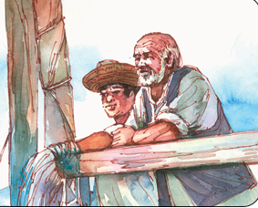
இயற்கைக்கும் மனிதனுக்கும் இடையே நடக்கும் போராட்டமே இந்தக் கதை. இக்கதையின் நாயகன் சாண்டியாகோ. வயது முதிர்ந்த மீனவர் அவர். முன்பெல்லாம் கடலுக்குச் சென்றால் மீன் இல்லாமல் திரும்பமாட்டார். ஆனால், கடந்த எண்பத்து நான்கு நாள்களாக ஏனோ அவருக்கு ஒரு மீனும் கிடைக்கவில்லை. மனோலின் என்னும் சிறுவன் மீன்பிடிக்கக் கற்றுக்கொள்வதற்காக முதல் நாற்பது நாள்களும் அவருடன் கடலுக்கு வந்தான், அவன்,அவருக்கு வேண்டிய உதவிகள் செய்ததோடு பேச்சுத் துணையாகவும் இருந்தான். அவரோடு கடலுக்குப் போனால் ஒரு மீனும் கிடைப்பதில்லை என்று அவனை வேறு படகிற்கு அனுப்பிவிட்டனர் அவன் பெற்றோர். இப்போதெல்லாம் தனியாகவே மீன்பிடிக்கச் செல்கிறார் சாண்டியாகோ.
அன்று எண்பத்து ஐந்தாவது நாள்
கடலுக்கு மீன்பிடிக்கச் செல்கிறார் சாண்டியாகோ.
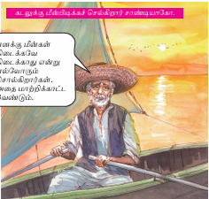
எனக்கு மீன்கள் கிடைக்கவே கிடைக்காது என்று எல்லோரும்
சொல்கிறார்கள். அதை மாற்றிக் காட்ட வேண்டும்.
தூண்டிலிட்டுக் காத்திருக்கிறார்.
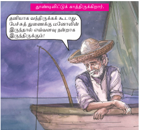
தனியாக வந்திருக்கக் கூடாது. பேச்சுத் துணைக்கு மனோலின் இருந்தால் எவ்வளவு நன்றாக இருந்திருக்கும்
அடுத்த நாள் காலை.
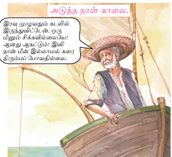
இரவு முழுவதும் கடலில் இருந்துவிட்டேன். ஒரு மீனும் சிக்கவில்லையே
ஆனது ஆகட்டும் இனி நான் மீன் இல்லாமல் கரை திரும்பப் போவதில்லை.
நண்பகல் தூண்டில் கயிறு அசைகிறது
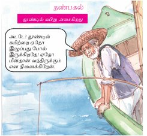
அடடே தூண்டில் கயிற்றை ஏதோ இழுப்பது போல் இருக்கிறதே
ஏதோ மீன்தான் வந்திருக்கும் என நினைக்கிறேன்.
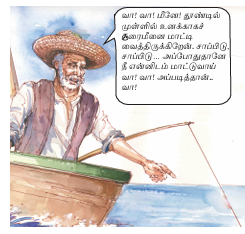
வா வா மீனே தூண்டில் முள்ளில் உனக்காகச் சூரைமீனை மாட்டி வைத்திருக்கிறேன். சாப்பிடு, சாப்பிடு அப்போதுதானே நீ என்னிடம் மாட்டுவாய் வா வா அப்படித்தான் வா
தூண்டிலில் மீன் சிக்கிக்கொள்கிறது
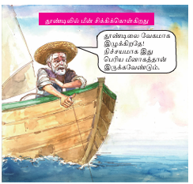
தூண்டிலை வேகமாக இழுக்கிறதே! நிச்சயமாக இது பெரிய மீனாகத்தான்
இருக்கவேண்டும்.
மீனைப் படகுக்குள் இழுக்க முயற்சி செய்கிறார். முடியவில்லை
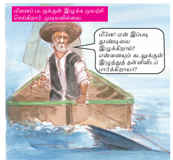
மீனே ஏன் இப்படி தூண்டிலை இழுக்கிறாய் என்னையும் கடலுக்குள் இழுத்துத் தள்ளிவிடப் பார்க்கிறாயா
மீன் நீருக்கு மேலே வருவதும் மூழ்குவதுமாக இருக்கிறது.
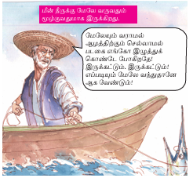
மேலேயும் வராமல் ஆழத்திற்கும் செல்லாமல் படகை எங்கோ இழுத்துக்கொண்டே போகிறதே! இருக்கட்டும். இருக்கட்டும் எப்படியும் மேலே வந்துதானே ஆக வேண்டும்
மாலை நேரம்.
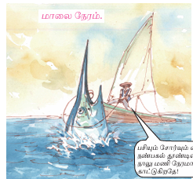
பசியும் சோர்வும் என்னை வாட்டுகின்றன. நண்பகல் தூண்டிலில் சிக்கிய மீன் நாலு மணி நேரமாக என்னிடம் ஆட்டம் காட்டுகிறதே!
மீன் அசைவின்றி இருக்கிறது. மீனுடன் போராடிய களைப்பில் சாண்டியாகோ சற்றுக் கண்ணயர்ந்து விட்டார்.
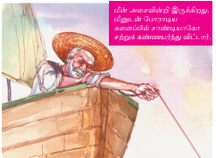
மீன் மீண்டும் தூண்டிலை இழுக்கிறது. சாண்டியாகோவின் உறக்கம் கலைகிறது
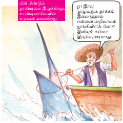
ஓ இரவு முழுவதும் தூக்கம் இல்லாததால் என்னை அறியாமல்
தூங்கிவிட்டேனோ இனியும் சும்மா இருக்க முடியாது.
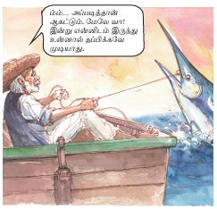
ம்ம் அப்படித்தான் ஆகட்டும். மேலே வா! இன்று என்னிடம் இருந்து
உன்னால் தப்பிக்கவே முடியாது.
சாண்டியாகோ தூண்டிலை இழுக்கிறார். மீன் முதன்முதலாக நீருக்கு மேலே துள்ளிக் குதிக்கிறது.
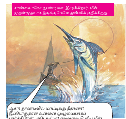
ஆகா தூண்டிலில் மாட்டியது நீதானா இப்போதுதான் உன்னை முழுமையாகப் பார்க்கிறேன். அடேயப்பபா எவ்வளவு பெரிய மீன்
மீன் படகைச் சுற்றி வட்டமிடுகிறது.
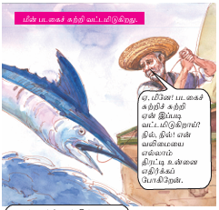
ஏ மீனே படகைச் சுற்றிச் சுற்றி ஏன் இப்படி வட்டமிடுகிறாய் நில், நில் என் வலிமையை எல்லாம் திரட்டி உன்னை எதிர்க்கப் போகிறேன்.
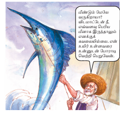
மீண்டும் மேலே வருகிறாயா விடமாட்டேன் நீ, எவ்வளவு பெரிய
மீனாக இருந்தாலும் எனக்குக் கவலையில்லை. என் உயிர் உள்ளவரை
உன்னுடன் போராடி வெற்றி பெறுவேன்
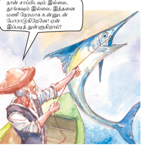
நான் சாப்பிடவும் இல்லை, தூங்கவும் இல்லை. இத்தனை மணி நேரமாக உன்னுடன் போராடுகிறேனே! ஏன் இப்படித் துள்ளுகிறாய்?
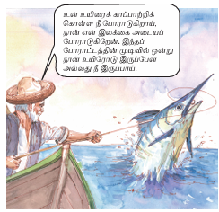
உன் உயிரைக் காப்பாற்றிக் கொள்ள நீ போராடுகிறாய், நான் என் இலக்கை அடையப் போராடுகிறேன். இந்தப் போராட்டத்தின் முடிவில் ஒன்று நான் உயிரோடு இருப்பேன் அல்லது நீ இருப்பாய்.
மீன் படகுக்கு அருகில் மேலெழும்பிக் குதிக்கிறது. சாண்டியாகோ ஈட்டியால் மீனைக் குத்துகிறார்.
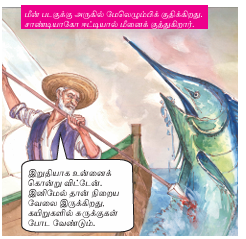
இறுதியாக உன்னைக் கொன்று விட்டேன். இனிமேல் தான் நிறைய
வேலை இருக்கிறது, கயிறுகளில் சுருக்குகள் போட வேண்டும்.
மீனின் நீளம் அதிகமாக இருந்ததால் அதைப் படகின் பக்கவாட்டில் கட்டுகிறார்.
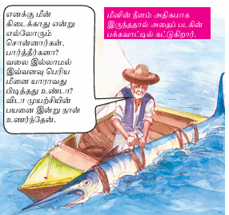
எனக்கு மீன் கிடைக்காது என்று எல்லோரும் சொன்னார்கள், பார்த்தீர்களா? வலை இல்லாமல் இவ்வளவு பெரிய மீனை யாராவது பிடித்தது உண்டா? விடா முயற்சியின் பயனை இன்று நான் உணர்ந்தேன்.
அப்போது படகை நோக்கிச் சுறா மீன் வருகிறது
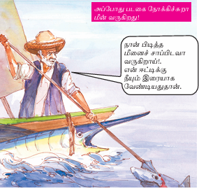
நான் பிடித்த மீனைச் சாப்பிடவா வருகிறாய்!. என் ஈட்டிக்கு நீயும் இரையாக வேண்டியதுதான்.
மேலும் சில சுறாமீன்கள் வருகின்றன.
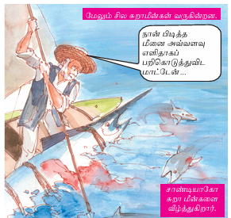
நான் பிடித்த மீனை அவ்வளவு எளிதாகப் பறிகொடுத்துவிட மாட்டேன்
சாண்டியாகோ சுறா மீன்களை வீழ்த்துகிறார்.
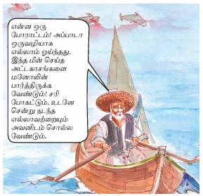
என்ன ஒரு போராட்டம் அப்பாடா ஒருவழியாக எல்லாம் ஓய்ந்தது. இந்த மீன் செய்த அட்டகாசங்களை மனோலின் பார்த்திருக்க வேண்டும், சரி போகட்டும். உடனே சென்று நடந்த எல்லாவற்றையும் அவனிடம் சொல்ல வேண்டும்.
கரையில்
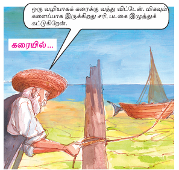
ஒரு வழியாகக் கரைக்கு வந்து விட்டேன். மிகவும் களைப்பாக இருக்கிறது சரி, படகை இழுத்துக் கட்டுகிறேன்
படகோடு இருந்த மீனைப் பார்க்கிறார்.
ஆ, என்ன இது, சுறாக்கள் தின்றது போக கடைசியில் மீனின் தலையும்
அதன் எலும்பும்தாம் மிஞ்சியுள்ளனவா.
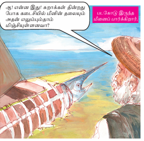
வீட்டில்…
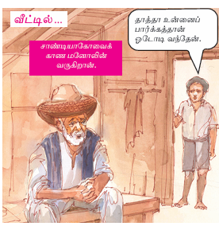
சாண்டியாகோவைக் காண மனோலின் வருகிறான்.
தாத்தா உன்னைப் பார்க்கத்தான் ஓடோடி வந்தேன்.
அடேயப்பா எவ்வளவு பெரிய மீன் அது! மீன்பிடிப்பதில் பெரிய வீரன்
தாத்தா நீ
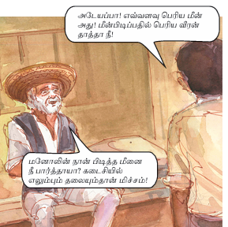
மனோலின் நான் பிடித்த மீனை நீ பார்த்தாயா? கடைசியில் எலும்பும் தலையும்தான் மிச்சம்
அதனால் என்ன தாத்தா, உன் திறமையும் விடாமுயற்சியும்
வென்றுவிட்டதே, இனி உன்னை யாரும் பழித்துப் பேசமுடியாது.
தாத்தா! உன்னிடம் கற்றுக்கொள்ள வேண்டியைவ நிறைய
இருக்கின்றன. இனி நான் உன்னோடுதான் மீன் பிடிக்க வருவேன்.
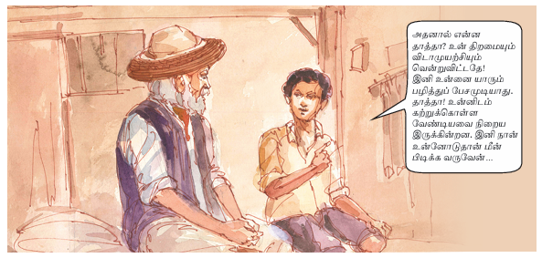
1, கடல் காட்சி ஒன்றைப் படம் வரைந்து வண்ணம் தீட்டுக.
அப்படத்திற்குப் பொருத்தமாக நான்கு வரிகளுக்குள் குறிப்பு எழுதுக.
2, இக்கதையின் வழியாக நீங்கள் உணர்ந்தவற்றை வகுப்பில் பகிர்க.
3, சாண்டியாகோ குறித்து உங்கள் கருத்தை வகுப்பில் பகிர்க.
கிழவனும் கடலும் என்னும் படக்கதையை உங்கள் சொந்த நடையில் கதையாக எழுதுக.